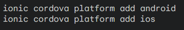
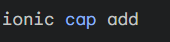
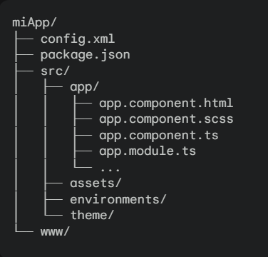

Ionic es un framework o marco de trabajo de código abierto, basado en Angular, que permite desarrollar aplicaciones móviles híbridas de alta calidad utilizando tecnologías web como HTML, CSS y JavaScript. Esto significa que puedes crear una única base de código que se pueda ejecutar en múltiples plataformas móviles (iOS, Android, y más recientemente, aplicaciones web progresivas) sin tener que aprender lenguajes de programación específicos para cada plataforma.
Ionic ofrece una serie de características que lo hacen una excelente opción para el desarrollo de aplicaciones móviles:
onic proporciona una amplia biblioteca de componentes de interfaz de usuario (botones, listas, tarjetas, etc.) con estilos predefinidos, lo que agiliza el desarrollo y garantiza una apariencia consistente en todas las plataformas.
Ionic utiliza tecnologías web, pero logra un rendimiento cercano al nativo gracias a la integración con tecnologías como WebView y Capacitor, que permiten acceder a las funcionalidades del dispositivo.
Ionic está estrechamente integrado con Angular, un framework popular para el desarrollo web, lo que proporciona una estructura sólida y un ecosistema de herramientas y librerías muy amplio.
Ionic cuenta con una gran comunidad de desarrolladores, lo que significa que hay muchos recursos, tutoriales y soporte disponibles en línea.
Ionic utiliza Capacitor como herramienta para acceder a las funciones nativas del dispositivo, como la cámara, el GPS, etc., de forma sencilla y unificada.
Una vez que tengas instalados Node.js, npm (o yarn) y un editor de código, puedes comenzar a configurar tu proyecto Ionic.
Para agregar soporte para una plataforma específica (iOS o Android), utiliza los siguientes comandos:
Puedes ejecutar tu aplicación en un emulador o en un dispositivo físico conectado a tu computadora. Ionic utiliza Cordova para gestionar la interacción con los dispositivos
Si deseas utilizar Capacitor para acceder a las funcionalidades nativas de forma más moderna, puedes migrar tu proyecto asì:
Una vez creado el proyecto, encontrarás una estructura de archivos y carpetas similar a esta:
Contiene el código fuente de tu aplicación.
Contiene los archivos estáticos que se servirán al navegador.
Contiene la configuración de la aplicación para las diferentes plataformas.
Contiene las dependencias del proyecto.